2. Description of the Main Window¶
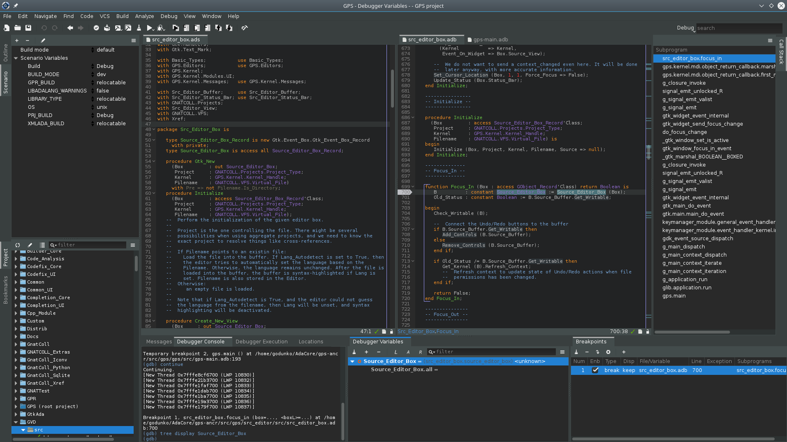The GNAT Programming Studio has one main window, which is where you perform most of your work. However, GPS is very flexible and lets you organize your desktop many different ways, as discussed in a later section (Multiple Document Interface).
There are also other windows that might pop up at various times, documented in this section.
2.1. The Workspace¶
The overall workspace is based on a multiple document interface (see Multiple Document Interface) and can contain any number of windows, the most important of which are usually the editors. However, GPS also provides a large number of views that you can add to the workspace. The sections below list them.
2.1.1. Common features of the views¶
Some views are part of the default desktop and are visible by default. Open the other views through one of the submenus of the menu.
Some of the views have their own local toolbar that contains shortcuts to the most often used features of that view.
There is often a button to the right of these local toolbars that opens a local settings menu. This menu either contains more actions you can perform in that view or various configuration settings allowing you to change the behavior or display of the view.
Some views also have a filter in their local toolbar. You can use these filters to reduce the amount of information displayed on the screen by only displaying those lines matching the filter.
If you click on the left icon of the filter, GPS brings up a popup menu to allow you to configure the filter:
- Use the first three entries to choose the search algorithm (full text match, regular expression, or fuzzy matching). These modes are similar to the ones used in the omni-search (see The omni-search).
- The next entry is Invert filter. When you select this
option, lines that do not match the filter are displayed, instead of
the default behavior of displaying ones that match the filter. You
can also enable this mode temporarily by beginning the filter with
the string
not:. For example, a filter in the Locations view sayingnot:warninghides all warning messages. - Select the last entry, Whole word, when you only want to match full words, not substrings.
2.1.2. Common features of browsers¶
GPS presents a view of information using an interactive display called a “browser”, which shows a canvas containing boxes you can manipulate. Browsers provide the following additional capabilities:
Links
Boxes can be linked together and remain linked when they are moved. There are different types of links; see the description of the various browsers for more details.
Hide links using a button on the local toolbar. This keeps the canvas more readable at the cost of losing information. You can also hide only a subset of links. Even when links are hidden, if you select a box, boxes linked to it are still highlighted.
Scrolling
When many boxes are displayed, the currently visible area may be too small for all of them. When that happens, GPS adds scrollbars. You can also scroll using the arrow keys, or by dragging the background while pressing the left mouse button.
Layout
GPS organizes the boxes in a browser using a simple layout algorithm, which is layer oriented: items with no parents are put in the first layer, their direct children are put in the second layer, and so on. Depending on the type of browser, these layers are organized either vertically or horizontally. If you move boxes, this algorithm tries to preserve their relative positions as much as possible.
Use the Refresh layout button in the local toolbar to recompute the layout at any time, including that of boxes you moved.
Moving boxes
Move boxes with the mouse. Drag the box by clicking on its title bar. The box’s links are still displayed during the move, so you can see whether it overlaps any other box. If you try to move the box outside the visible part of the browser, it is scrolled.
Selecting boxes
Select a box by clicking it.
The title bar of selected boxes is a different color. All boxes linked to them also use a different title bar color and so do the links. This is the most convenient way to visualize the relationships between boxes when many are present in the browser.
Use buttons in the local toolbar to either remove the selected boxes or remove the boxes that are not selected.
Zooming
GPS provides several different zoom levels. Use the zoom in, zoom out, and zoom buttons in the local toolbar to change the level and use the latter to explicitly select the level you want.
You can also press the
altkey and use the mouse wheel to zoom in or out.This capability is generally useful when many boxes are displayed in the browser to allow you to get an overview of the layout and the relationships between the boxes.
export
Export the entire contents of a browser as a
PNGorSVGimage using the Export to... button in the local toolbar.Hyper-links
Some boxes contain hyper links, displayed in blue by default, and underlined. Clicking on these generally displays new boxes.
Contextual menus
Right-clicking on boxes displays a contextual menu with actions you can perform on that box. These actions are specific to the kind of box you clicked.
Grid
By default, GPS doesn’t display a grid on the canvas. Use the local settings menu to show the grid (uncheck Draw grid) or to force items to align on the grid (Align on grid).
2.1.2.1. Icons for source language entities¶
Entities in the source code are represented by icons within the various GPS views (for example, the Outline and Project views). These icons indicate both the semantic category of the entity within the language, such as packages and methods, as well as compile-time visibility. The icons also distinguish entity declarations from other entities. The same icons are used for all programming languages supported by GPS, with language-specific interpretations for both compile-time visibility and distinguishing declarations and uses of entities.
These five language categories are used for all supported languages:
The package category’s icon is a square.
The subprogram category’s icon is a circle.
The type category’s icon is a triangle.

The variable category’s icon is a dot.

The generic category’s icon is a diamond.
These icons are enhanced with decorations, when appropriate, to indicate compile-time visibility constraints and to distinguish declarations from completions. For example, icons for entity declarations have a small ‘S’ decorator added, denoting a ‘spec’.
Icons for ‘protected’ and ‘private’ entities appear within an enclosing box indicating a compile-time visibility constraint. For entities with ‘protected’ visibility, the enclosing box is gray. ‘Private’ entities are enclosed by a red box. Icons for ‘public’ entities have no enclosing box. For example, a variable with ‘private’ visibility is represented by an icon consisting of a dot enclosed by a red box. These additional decorations are combined when appropriate. For example, the icon corresponding to the ‘private’ declaration of a ‘package’ entity would be a square, as for any package entity, with a small ‘S’ added, all enclosed by a red box.
Language constructs are mapped to categories in a language-specific manner. For example, C++ namespaces and Ada packages correspond to the package category and C functions and Ada subprograms correspond to the method category. The generic category is a general category representing other language entities, but not all possible language constructs are mapped to categories and icons. (Specifically, the generic category does not correspond to Ada generic units or C++ templates.)
The names of the categories should not be interpreted literally as language constructs because the categories are meant to be general in order to limit the number of categories. For example, the variable category includes both constants and variables in Ada. Limiting the number of categories maintains a balance between presentation complexity and the need to support many different programming languages.
Icons for a given entity may appear more than once within a view. For example, an Ada private type has both a partial view in the visible part of the enclosing package and a full view in the private part of the package. A triangle icon will appear for each of the two occurrences of the type name, one with the additional decoration indicating ‘private’ visibility.
2.2. The Preferences Assistant¶
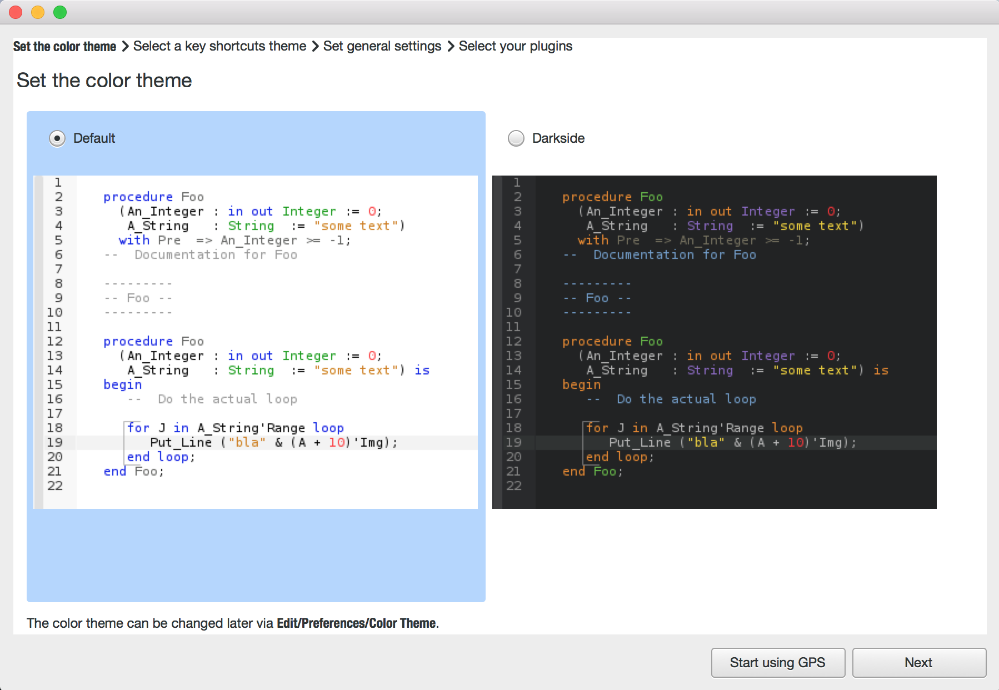When starting GPS for the first time, a preferences assistant window opens, allowing you to configure some general preferences (color theme, key bindings etc.).
You can skip the remaining pages of the preferences assistant by clicking on the Start using GPS button or by clicking on red cross.
2.3. The Welcome Dialog¶
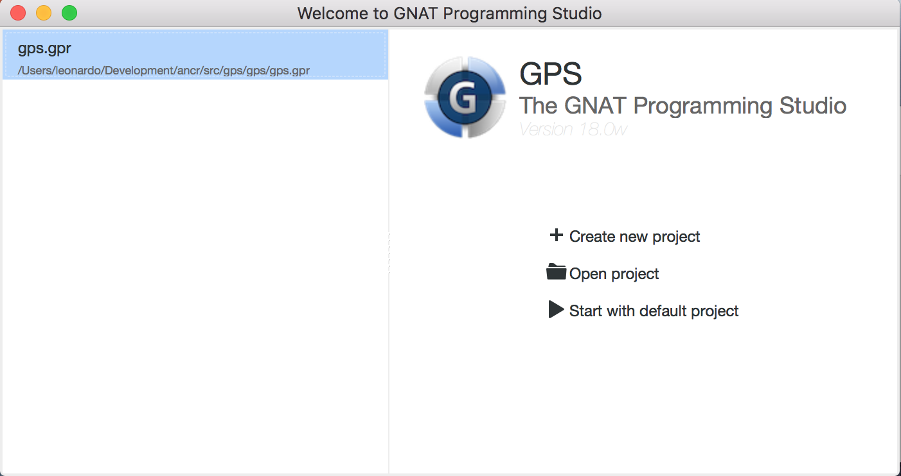When GPS starts, it looks for a project file to load so it knows where to find the sources of your project. This project is often specified on the command line (via a -P switch). If not, and the current directory contains only one project file, GPS selects it automatically. Finally, if you specify the name of a source file to edit, GPS loads a default project. If GPS cannot find a project file, it displays a welcome dialog, giving you the following choices:
Create new project
Clicking on this button launches an assistant to create a project using one of the predefined project templates. This makes it easy to create GtkAda-based applications, or applications using the Ada Web Server, for example.
Open project
Clicking on this button opens up a file browser, allowing you to select a project file to load.
Start with default
Clicking on this button causes GPS to look for a project called
default.gprin the current directory and load it if found. Otherwise, it copies the default project<prefix>/share/gps/default.gprinto the current directory and loads it. GPS removes this temporary copy when exiting or loading another project if you have not modified the copy.The default project contains all the Ada source files from the specified directory (assuming they use the default GNAT naming scheme
.adsand.adb).If the current directory is not writable, GPS instead loads
<prefix>/share/gps/readonly.gpr. In this case, GPS runs in a limited mode, where some capabilities (such as building and source navigation) are not available. This project will not contain any sources.
In addition to these choices, you can also load a recently opened project by clicking the project of interest in the left-hand pane listing the known recent projects.
2.4. The Tool Bar¶
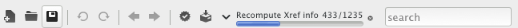 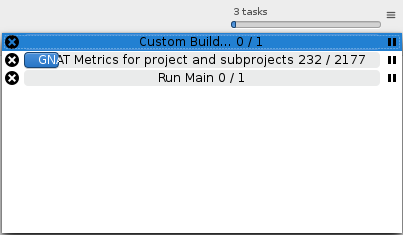The tool bar provides shortcuts to some common actions:
- Create a new file
- Open an existing file (see also the omni-search on the right of the bar)
- Save the current file
- Undo or redo last editing
- Go to previous or next saved location
- Multiple customizable buttons to build, clean, run or debug your project
- multiple buttons to stop and continue the debugger, step to the next instruction, and other similar actions when a debugger is running.
When GPS is performing background actions, such as loading cross-reference information or all actions involving external processes (including compiling), it displays a progress bar in the toolbar showing when the current task(s) will be completed. Click on the button to pop up a window showing the details of the tasks. This window is a Tasks view, and can be used to pause or interrupt running tasks (see The Tasks view). This window can be discarded by pressing ESC or by clicking anywhere else in the GPS. This window also disappears when there are no more running tasks.
2.5. The omni-search¶
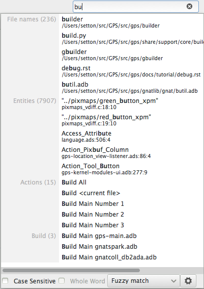The final item in the toolbar is “omni-search”. Use this to search for text in various contexts in GPS, such as filenames (for convenient access to source files), the entities referenced in your application, and your code.
There are various ways to use the omni-search:
The simplest way is to click on it and type the pattern you want to find. GPS immediately starts searching in the background for possible matching open windows, file names, entities, GPS actions, bookmarks, and source files. For each context, GPS display how many matches there are in that context but only displays the five matches with the highest score.
Click on the name of context to search only in that context. For example, if GPS shows 20 file names matching your search (while only displaying the five first), click on file names to view all 20 names and exclude the results from all the other contexts. If you click on the context again, GPS again displays the results from all contexts.
If you are searching in a single context, GPS defines a number of actions to which you can bind key shortcuts via the dialog instead of using the above procedure. These actions are found in the Search category and are called Global Search in context:. GPS includes a menu for two of them by default: searches filenames, while searches all entities defined in your project.
Each context displays its results slightly differently and clicking on a result has different effects in each context. For example, clicking on a file name opens the corresponding file, while clicking on an entity jumps to its declaration and clicking on a bookmark displays the source file containing the bookmark.
Press enter at any point to select the top item in the list of
search results.
You may have no interest in some search contexts. Disable them by clicking
the Settings icon at the bottom-right corner of the completion
popup. The resulting dialog displays a list of all contexts to be searched;
clicking on any of the checkboxes next to the names disables searching that
context. This list is only displayed when you started the omni-search by
clicking on it in the toolbar. If you started it via shift-F3 or the
equivalent menu, only a
subset of the settings are displayed.
You can also reorder the contexts from this settings dialog, which affects the order in which they are searched and displayed. We recommend keeping the Sources context last, because it is the slowest and while GPS is searching it, cannot search the other, faster, contexts.
In the settings dialog, you can choose whether to display a
Preview for the matches. This preview is displayed when you use
the down arrow key to select some of the search results. It
displays the corresponding source file or the details for the matching GPS
action or bookmark. You can also select the number of results to be
displayed for each context when multiple contexts are displayed or the size
of the search field (which depends on how big your screen and the GPS
window are).
One search context looks for file names and is convenient for quickly
opening files. By default, it looks at all files found in any of the source
directories of your project, even if those files are not explicit sources of
the project (for example because they do not match the naming scheme for any
of the languages used by the project). This is often convenient because you
can easily open support files like Makefiles or documentation, but
it can also sometimes be annoying if the source directories include too
many irrelevant files. Use the Include all files from source
dirs setting to control this behavior.
GPS allows you to choose among various search algorithms:
Full Text checks whether the text you typed appears exactly as you specified it within the context (for example, a file name, the contents of a file, or the name of an entity).
Regular Expression assumes the text you typed is a valid regular expression and searches for it. If it is not a valid regexp, it tries to search for the exact text (like Full Text).
Fuzzy Match tries to find each of the characters you typed, in that order, but possibly with extra characters in between. This is often the fastest way to search, but might requires a bit of getting used to. For example, the text
mypksmatches the file nameMY_PacKage.adSbecause the letters shown in upper cases are contained in the filename.When searching within source files, the algorithm is changed slightly, to avoid having too many matches. In that context, GPS only allows a close approximations between the text you typed and the text it tries to match (for example, one or two extra or missing characters).
Select the algorithm to use at the bottom of the popup window containing the search results.
Once it finds a match, GPS assigns it a score, used to order the results in the most meaningful way for you. Scoring is based on a number of criteria:
length of the match
For example, when searching file names, it is more likely that typing ‘foo’ was intended to match ‘foo.ads’ than ‘the_long_foo.ads’.
the grouping of characters in the match
As we have seen, when doing a fuzzy match GPS allows extra characters between the ones you typed. But the closer the ones you typed are in the match result, the more likely it is that this is what you were looking for.
when was the item last selected
If you recently selected an item (like a file name), GPS assumes you are more likely to want it again and raises its score.
2.6. The Messages view¶
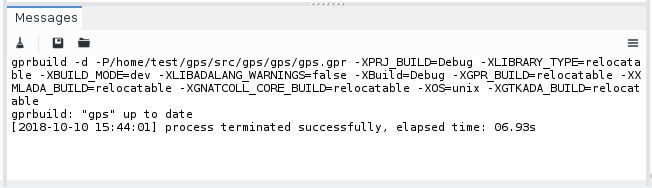The Messages view, which is read-only, displays information and feedback about operations, including build output, information about processes launched, and error messages.
Its local toolbar contains buttons to Clear the contents of the window, as well as Save and Load from files. The latter operation also parses those messages into the Locations window.
The actual output of the compilation is displayed in the Messages view but is also parsed and many of its messages are displayed more conveniently in the Locations view (see The Locations View). When a compilation finishes, GPS displays the total elapsed time.
You cannot close the Messages view because it might contain important messages. If GPS closed it, you can reopen it with the menu.
2.7. The Locations View¶
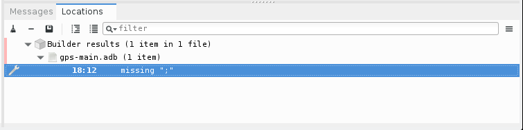GPS uses the Location view, which is also read-only, to display a list of locations in source files (for example, when performing a global search or displaying compilation results).
It displays a hierarchy of categories, each of which contain files, each, in turn, containing messages at specific locations. The category describes the type of messages (for example, search or build results). If the full text of a message is too large to be completely shown in the window, placing the mouse over it pops up a tooltip window with the full text.
Each message in this window corresponds to a line in a source editor. This line has been highlighted and has a mark on its left side. Clicking on a message brings up an editor pointing to that line.
The Locations view provides a local toolbar with the following buttons:
- Clear removes all entries from the view and, depending on your settings, may also close the view.
- Remove removes the currently selected category, file or message as well as the corresponding highlighting in the source editor.
- Save saves the contents of the view to a text file for later reference. You cannot load this file back into the Locations view, but you can load it into the Messages view. However, if you plan to reload it later, it is better to save and reload the contents of the Messages view instead.
- Expand All and Collapse All shows or hides all messages in the view.
- a filter to selectively show or hide some messages. Filtering is done on the text of the message itself (the filter is either text or a regular expression). You can also reverse the filter. For example, typing warning in the filter field and reversing the filter hides warning messages
The local settings menu contains the following entries:
Toggle the sorting of messages by sub-categories. This is useful for separating warnings from errors in build results. The error messages appear first. The default is to sort the message by their location.
Sort messages by filenames (sorted alphabetically). The default does not sort by filenames to make it easier to manipulate Locations view while the compilation is proceeding. (If sorted, the messages might be reordered while you are trying to click on them).
Every time a new category is created, for example, as a result of a compilation or search operation, the first message in that category is automatically selected and the corresponding editor opened, and the focus is given to the Locations view.
Controls the behavior of the and menus (see below).
Automatically close this window when it becomes empty.
Controls whether GPS should save and restore the contents of this window between sessions. Be careful, because the loaded contents might not apply the next time. For example, the source files have changed, or build errors have been fixed. So you should not select this option if those conditions might apply.
Preserve more build errors after recompiling. When the Locations view contains build errors, and one of the files is being recompiled, the Locations view will now only update the entries for that file, rather than removing all build errors.
GPS provides two menus to navigate through the locations using the keyboard: and . Depending on your settings, they might wrap around after reaching the first or last message.
You can also bind key shortcuts to these menus via the menu.
In some cases, a wrench icon will be visible on the left of a compilation message. See Code Fixing for more information on how to take advantage of this icon.
2.8. The Project view¶
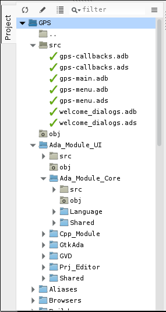 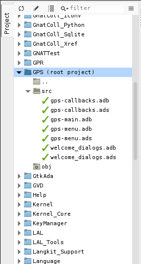The project view displays a representation of the various components of your project. By default, it is displayed on the left side of the workspace. Select it using the menu.
On Windows, you can drop files (for example, from Windows Explorer) into the project view. If you drop a project file, GPS loads it and it replaces the current project; if you drop a source file, GPS opens it in a new editor.
The project view, combined with the file and outline view, provide an interactive search capability allowing you to quickly search information currently displayed. Start typing the text to search when the view has the focus. Note that the contents of the Project view are computed lazily, so not all files are known to this search capability before they have been opened.
This search opens a small window at the bottom of the view where you can
interactively type names. The first matching name in the tree is selected
when you type it. Use the up and down keys to navigate
through all the items matching the current text.
The various components displayed in the project view are:
projects
Each source file you are working with is part of a project. Projects are a way to record the switches to use for the various tools as well as a number of other properties such as the naming schemes for the sources. They can be organized into a project hierarchy where a root project can import other projects, each with their own set of sources (see The Welcome Dialog for details on how projects are loaded in GPS).
The Project view displays this project hierarchy: the top node is the root project of your application (usually where the source file that contains the main subprogram will be located). A node is displayed for each imported project and recursively for other imported projects. If a project is imported by several projects, it may appear multiple times in the view,
If you edited the project manually and used the limited with construct to create cycles in the project dependencies, the cycle will expand infinitely. For example, if project
aimports projectb, which in turn imports projectathrough a limited with clause, then expanding the node forashowsb. In turn, expanding the node forbshows a node fora, and so on.An icon with a pen mark is displayed if the project was modified but not saved yet. You can save it at any time by right-clicking the icon. GPS either reminds you to save it before any compilation or saves it automatically, depending on your preference settings.
GPS provides a second display for this project view, which lists all projects with no hierarchy: all projects appear only once in the view, at the top level. You may find this display useful for deep project hierarchies, where it can make it easier to find projects. Activate this display using the local settings menu to the right of the Project view toolbar.
directories
The files in a project are organized into several directories on disk. These directories are displayed under each project node in the Project view
You choose whether to see the absolute path names for the directories or paths relative to the location of the project by using the local settings menu of the Project view. In all cases, the tooltip displayed when the mouse hovers over a file or directory shows the full path.
Special nodes are created for object and executables directories. No files are shown for these.
Use the local setting Show hidden directories to select the directories to be considered hidden. Use this to hide version control directories such as
CVSor.svn.
files
Source files are displayed under the node corresponding to the directory containing the file. Only the source files actually belonging to the project (i.e. are written in a language supported by that project and follow its naming scheme) are visible. For more information on supported languages, see Supported Languages. A file might appear multiple times in the Project view if the project it belongs to is imported by several other projects.
You can drag a file into GPS. This opens a new editor if the file is not already being edited or moves to the existing editor otherwise. If you press
shiftwhile dragging the file and it is already being edited, GPS creates a new view of the existing editor.
entities
If you open the node for a source file, the file is parsed by a fast parsers integrated in GPS so it can show all entities declared in the file. These entities are grouped into various categories that depend on the language. Typical categories include subprograms, packages, types, variables, and tasks.
Double-clicking on a file or clicking on any entity opens an editor or display showing, respectively, the first line in the file or the line on which the entity is defined.
If you open the search dialog via the menu, you can search for anything in the Project view, either a file or an entity. Searching for an entity can be slow if you have many files and/or large files.
GPS also provides a contextual menu, called , in source editors. This automatically searches for the first entry in this file in the Project view. This contextual menu is also available in other modules, for example when selecting a file in the Dependency browser.
The local toolbar of the Project view contains a button to reload the project. Use this when you have created or removed source files from other applications and want to let GPS know there might have been changes on the file system that impact the contents of the current project.
It also includes a button to graphically edit the attributes of the selected project, such as the tool switches or the naming schemes. It behaves similarly to the menu. See The Project Properties Editor for more information.
If you right click a project node, a contextual menu appears which contains, among others, the following entries that you can use to understand or modify your project:
Open a new window, the Project browser, which displays graphically the relationships between each project in the hierarchy (see The Project Browser).
Opens a new dialog to interactively edit the attributes of the project (such as tool switches and naming schemes) and is similar to the local toolbar button.
Saves a single project in the hierarchy after you modified it. Modified but unsaved projects in the hierarchy have a special icon (a pen mark on top of the standard icon). If you would rather save all modified projects in a single step, use the menu bar item .
Any time you modify one or more projects, the contents of the project view is automatically refreshed, but no project is automatically saved. This provides a simple way to temporarily test new values for the project attributes. Unsaved modified projects are shown with a special icon in the project view, a pen mark on top of the standard icon:
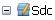Loads the project file into an editor so you can edit it. Use this if you need to access some features of the project files that are not accessible graphically (such as rename statements and variables).
Opens the dependencies editor for the selected project (see The_Project_Dependencies_Editor).
Adds new scenario variables to the project (see Scenarios and Configuration Variables). However, you may find it more convenient to use the Scenario view for this purpose.
All the entries in the local settings menu can be manipulated via python extensions, which might be useful when writing your own plugins. Here are examples on how to do that:
# The 'Show flat view" local setting
GPS.Preference('explorer-show-flat-view').set(True)
# The 'Show absolute paths" local setting
GPS.Preference('explorer-show-absolute-paths').set(True)
# The 'Show hidden directories' local setting
GPS.Preference('explorer-show-hidden-directories').set(True)
# The 'Show empty directories' local setting
GPS.Preference('explorer-show-empty-directories').set(True)
# The 'Projects before directories' local setting
GPS.Preference('explorer-show-projects-first').set(True)
# The 'Show object directories' local setting
GPS.Preference('explorer-show-object-dirs').set(True)
# The 'Show runtime files' local setting
GPS.Preference('explorer-show-runtime').set(True)
# The 'Group by directories' local setting
GPS.Preference('explorer-show-directories').set(True)
2.9. The Learn view¶
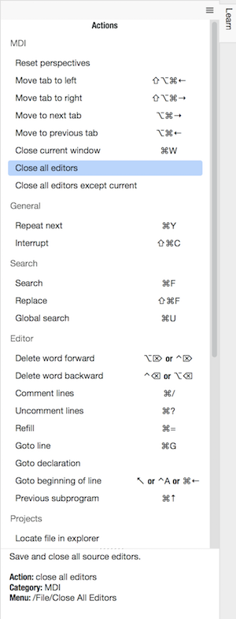The Learn view’s purpose is to help users to familiarize with GPS.
In particular the Learn view displays a list of the most commonly used and useful GPS actions, with their optional key shortcut.
The actual contents of the Learn view is filtered depending on the current context: for instance, the actions related to text editing will only be listed when an editor is focused. Same thing when it comes to debugging: the actions related to debugging will only be displayed when a debugger is running, etc. This way, you will be able to discover which actions can be executed in a given context.
Single-clicking on a particular action will display the associated documentation, providing more details on what the action actually does. You can also double-click on it if you want to actually run it.
2.10. The Scenario view¶
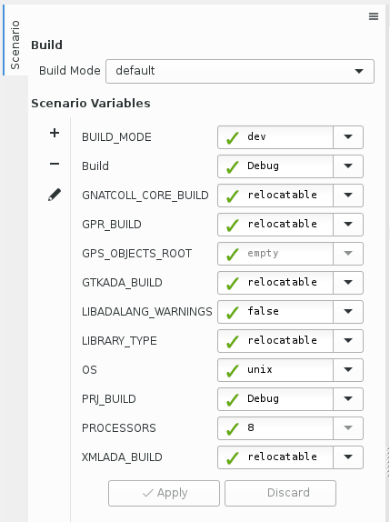As described in the GNAT User’s Guide, project files can be configured through external variables (typically environment variables). This means the exact list of source files or the exact switches used to compile the application can be changed when the value of these external variables is changed.
GPS provides a simple access to these variables, through a view called the Scenario view. These variables are called Scenario Variables, since they provide various scenarios for the same set of project files.
Each such variable is listed on its own line along with its current value. Change the current value by clicking on it and selecting the new value among the ones that pop up.
Across sessions, GPS will remember the values you set for scenario variables. On startup, the initial values of the scenario variables come, in decreasing order of priority:
- from the
-Xcommand line arguments; - from existing environment variables;
- from the value you set in a previous GPS session;
- from the default set in the project file;
- or else defaults to the first valid value for this variable
Whenever you change the value of any variable, GPS automatically recomputes the project and dynamically changes the list of source files and directories to reflect the new status of the project. Starting a new compilation at that point uses the new switches, and all aspects of GPS are immediately changed to reflect the new setup.
Create new scenario variables by selecting the + icon in the local toolbar of the Scenario view. Edit the list of possible values for a variable by clicking on the edit button in that toolbar. Delete a variable by clicking on the - button.
Each of these changes impacts the actual project file (.gpr), so
you might not want to make them if you wrote the project file manually
since the impact can be significant.
The first line in the Scenario view is the current mode. This impacts various aspects of the build, including compiler switches and object directories (see The Build Mode). Like scenario variables, change the mode by clicking on the value and selecting a new value in the popup window.
If you are not using build modes and want to save some space on the screen, use the local settings menu to disable the display.
2.11. The Files View¶
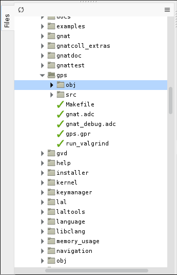In addition to the Project view, GPS also provides a Files view through the menu.
In this view, directories are displayed exactly as they are organized on the disk (including Windows drives). You can also explore each source file explored as described in The Project view. You can also drop files into the Files view to conveniently open a file.
By default, the Files view displays all files on disk. You can set filters through the local settings menu to restrict the display to the files and directories belonging to the project (use the menu).
2.12. The Windows view¶
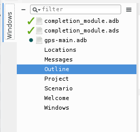 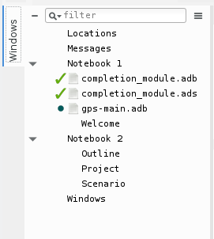The Windows view displays the currently opened windows. Open it via the menu.
In the contextual menu, you can configure the display in one of two ways:
- Sorted alphabetically
- Organized by notebooks, as in the GPS window itself. This view is particularly useful if you have many windows open.
You can also choose, through the local configuration menu, whether only source editors should be visible or whether all windows should be displayed.
This view allows you to quickly select and focus on a particular window by clicking the corresponding line. If you leave the button pressed, you can drag the window to another place on the desktop (see the description of the Multiple Document Interface)
Select multiple windows by clicking while pressing the control or shift keys. You can then click in on the first button in the local toolbar to close all selected windows at once, which is a fast way to clean up your desktop after you have finished working on a task.
2.13. The Outline view¶
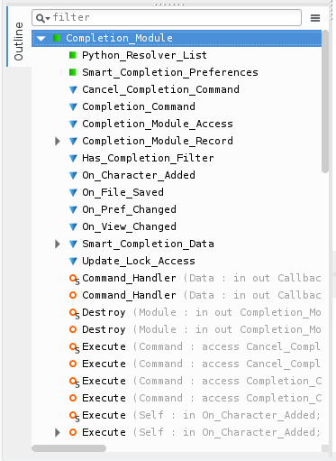 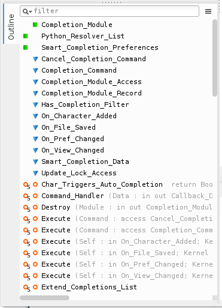 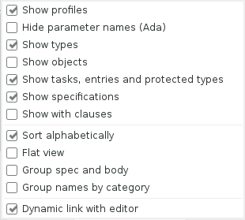The Outline view, which you activate through the menu, shows the contents of the current file.
Exactly what is displayed depends on the language of the file. For Ada, C and C++ files, this view displays the list of entities declared at the global level in your current file (such as Ada packages, C++ classes, subprograms, and Ada types). This view is refreshed whenever the current editor is modified.
Clicking on any entity in this view automatically jumps to the corresponding line in the file (the spec or the body).
The local settings menu contains multiple check boxes you can use to alter how the outline view is displayed:
Show profiles
Indicates whether the list of parameters of the subprograms should be displayed. This is particularly useful for languages allowing overriding of entities.
Show types, Show objects, Show tasks, entries, and protected types, Show with clauses
Controls the display of the specified categories of entities.
Show specifications
Indicates whether GPS displays a line for the specification (declaration) of entities in addition to the location of their bodies.
Sort alphabetically
Controls the order in which the entities are displayed (either alphabetically or in the same order as in the source file).
Flat View
Controls whether the entities are always displayed at the top level of the outline view. When disabled, nested subprograms are displayed below the subprogram in which they are declared.
Group spec and body
Displays up to two icons on each line (one for the spec and one for the body if both occur in the file). Click on one of the icons to go directly to that location. If you click on the name of the entity, you are taken to its declaration unless it is already the current location in the editor, in which case you are taken to its body.
Group names by category
With this option enabled it is possible to collapse each entity type (package, type, pragma, sub-program, etc.) to a single line in the Outline View. This works only in Flat View mode, so turning this option on makes the Flat View automatically enabled.
Dynamic link with editor
Causes the current subprogram to be selected in the outline view each time the cursor position changes in the current editor. This option will slow down GPS.
2.14. The Clipboard view¶
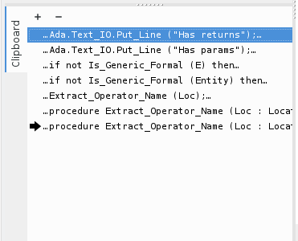GPS has an advanced mechanism for handling copy/paste operations.
When you click the or menu, GPS adds the current selection to the clipboard. However, unlike many applications, GPS does not discard the previous contents of the clipboard, but instead saves it for future use. By default, up to 10 entries are saved, but you can change that number using the Clipboard Size preference.
When you select the menu, GPS pastes the last entry added to the clipboard at the current location in the editor. If you then immediately select , this newly inserted text is removed and GPS instead inserts the second to last entry. You can keep selecting the same menu to insert progressively older entries.
This mechanism allows you to copy several noncontiguous lines from one place in an editor, switch to another editor, and paste all those lines without having to go back and forth between the two editors.
The Clipboard view graphically displays what is currently stored in the clipboard. Open it via the menu.
That view displays a list of entries, each of which is associated with one
level of the clipboard. The text displayed for each entry is its first line
containing non blank characters with leading characters omitted. GPS
prepends or appends [...] if the entry is truncated. If you hover
over an entry, a tooltip pops up displaying all lines in the entry.
In addition, one entry has an arrow on its left. This indicates the entry to be pasted if you select the menu. If you instead select the menu, the entry below that is inserted instead.
If you double-click any of these entries, GPS inserts the corresponding text in the current editor and makes the entry you click current, so selecting or the equivalent shortcut will insert that same entry again.
The local toolbar in the clipboard view provides two buttons:
Append To Previous.
The selected entry is appended to the one below and removed from the clipboard so that selecting pastes the two entries simultaneously. Use this when you want to copy lines from separate places in a file, merge them, and paste them together one or more times later, using a single operation.
Remove.
The selected entry is removed from the clipboard.
The Clipboard view content is preserved between GPS sessions. However very large entries are removed and replaced with an entry saying “[Big entry has been removed]”.
2.15. The Call trees view and Callgraph browser¶
These two views play similar roles in that they display the same information about entities, but in two different ways: the Call tree view displays the information in a tree, easily navigable and perhaps easier to manipulate when lots of entities are involved, and the Callgraph browser displays the information as graphical boxes that you can manipulate on the screen. The latter is best suited to generate a diagram that you can later export to your own documents.
These views are used to display the information about what subprograms are called by a given entity, and what entities are calling a given subprogram.
Some references are displayed with an additional “(dispatching)” text, which indicates the call to the entity is not explicit in the sources but could potentially occur through dynamic dispatching. (This depends on what arguments are passed to the caller at run time; it is possible the subprogram is in fact never called.)
2.15.1. Call Trees¶
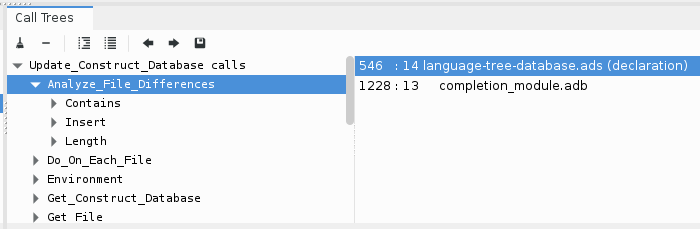The Call trees are displayed when you select one of the contextual menus and . Every time you select one of these menus, a new view is opened to display that entity.
Expand a node from the tree by clicking on the small expander arrow on the left of the line. Further callgraph information is computed for the selected entity, making it very easy to get the information contained in a full callgraph tree. Closing and expanding a node again recomputes the callgraph for the entity.
The right side of the main tree contains a list displays the locations of calls for the selected entity. Click on an entry in this list to open an editor showing the corresponding location.
The Call tree supports keyboard navigation: Up and
Down keys navigate between listed locations, Left collapses
the current level, Right expands the current level, and
Return jumps to the currently selected location.
The contents of the calltree is not restored when GPS is restarted because its contents might be misleading if the sources have changed.
The local toolbar provides the following buttons:
Clear
Remove all entries from the Callgraph View.
Remove entity
Remove the selected entity from the Callgraph View.
Collapse all
Collapse all the entities in the Callgraph View.
2.15.2. Callgraph browser¶
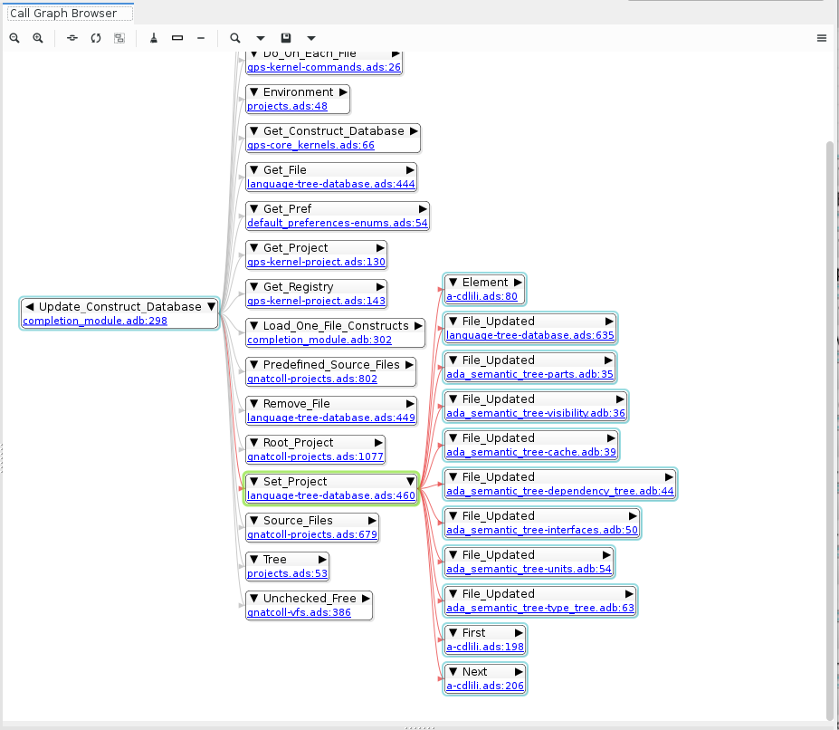The Callgraph browser graphically displays the relationship between subprogram callers and callees. A link between two items indicates one of them is calling the other.
GPS provides special handling for renamed entities (in Ada): if a subprogram is a renaming of another, both items are displayed in the browser with a special hashed link between the two. Since the renamed subprogram does not have a proper body, you need to ask for the subprograms called by the renamed entity to get the list.
In this browser, clicking on the right arrow in the title bar displays all the entities called by the selected item. Clicking on the left arrow displays all the entities that call the selected item (i.e. its callers).
Open this browser by right-clicking on the name of an entity in a source editor or Project view and selecting one of the , , or menus.
All boxes in this browser display the location of their declaration and the list of all references in the other entities currently displayed in the browser. If you close the box for an entity that calls them, the matching references are also hidden.
If you right-click on the title of one of the entity boxes, you get the same contextual menu as when you click on the name of an entity in an editor, with the additional entries:
Open a source editor displaying the declaration of the entity.
Open a source editor displaying the body of the entity.
Move the focus to the project view, and select the first node representing the file in which the entity is declared. This makes it easier to see which other entities are declared in the same file.
See also Common features of browsers for more capabilities of the GPS browsers.
2.16. The Bookmarks view¶
2.16.1. Basic usage: Creating a new bookmark¶
The basic usage of bookmarks is as follows: you open a source editor and navigate to the line of interest. You can then create a new bookmark by either using the menu or by opening the Bookmarks view () and then clicking on the [+] button in the local toolbar. In both cases, the Bookmarks view is opened, a new bookmark is created and selected so that you can immediately change its name.
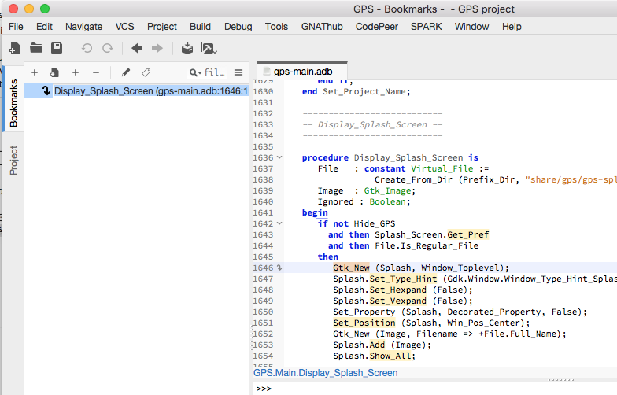{kind=link}
The default name of bookmark is the name of the enclosing subprogram and the initial location of the bookmark (file:line). But you can start typing a new name, and press Enter to finally create the bookmark.
In practice, this is really just a few clicks (one of the menu and press
Enter to use the new name), or even just two key strokes if you have set
a keyboard shortcut for the menu, via the Preferences dialog.
At any point in time, you can rename an existing bookmark by either clicking on the button in the local toolbar, or simply with a long press on the bookmark itself.
Note the goto icon on the left of the editor line 1646, which indicates there is a bookmark there, as well as the colored mark in the editor scrollbar that helps navigate in the file.
Even though the default name of the bookmark includes a file location, the major benefit of the bookmarks is that they will remain at the same location as the text is edited. In our example, if we add a new subprogram before Display_Splash_Screen, the bookmark will still point at the line containing the call to Gtk_New, even though that line might now be 1700 for instance.
Of course, GPS is not able to monitor changes that you might do through other editors, so in this case the marks might be altered and stop pointing to the expected location.
2.16.2. Adding more bookmarks¶
We can create any number of bookmarks, and these have limited impact on performance. So let’s do that and create a few more bookmarks, in various files. As you can see in the scrollbar of the editor, we have two bookmarks set in the file bookmark_views.adb, and we can easily jump to them by clicking on the color mark.
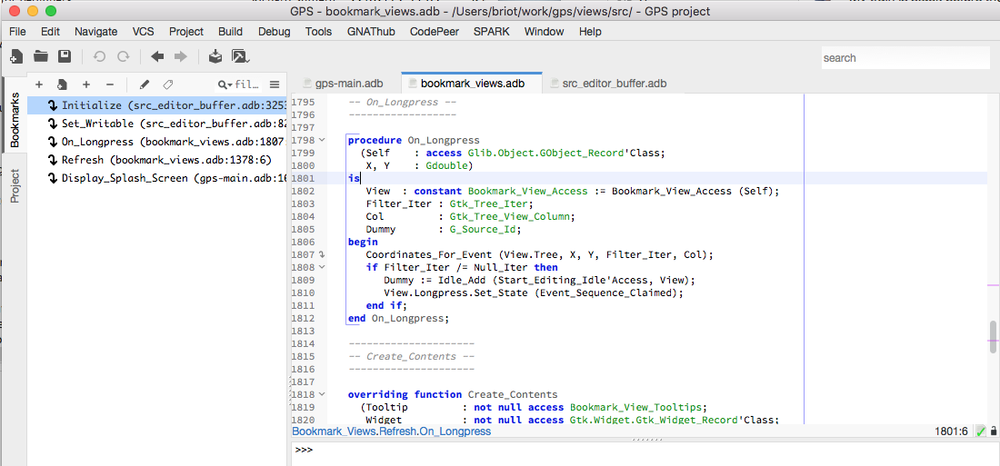{kind=link}
But of course, it is much simpler to double-click inside the Bookmarks view itself, on the bookmark of interest to us.
At this point, we have a rather long unorganized list of bookmarks, let’s improve.
2.16.3. Organizing bookmarks into groups¶
When we create new bookmarks, GPS adds them at the top of the list. We might want to organize them differently, which we can do simply with a drag and drop operation: select the bookmark, keep the mouse pressed, and move it to a better place in the list.
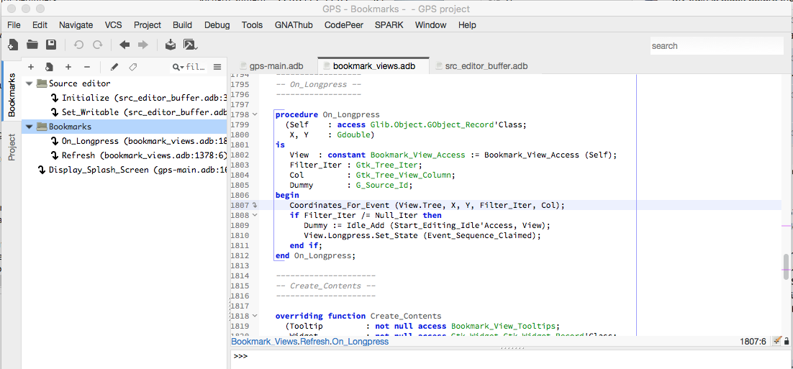{kind=link}
Things become more interesting when you drop a bookmark on top of another one. In this case, GPS creates a group that contains the two bookmarks (and that basically behaves like a folder for files). The group is immediately selected so that you can rename it as you see fit.
In our example, we created two groups, corresponding to two features we are working on.
Groups can be nested to any depth, providing great flexibility. So let’s create two nested groups, which we’ll name TODO, beneath the two we have created. This is a great way to create a short todo list: one top-level group for the name of the feature, then below one group for the todo list, and a few additional bookmarks to relevant places in the code.
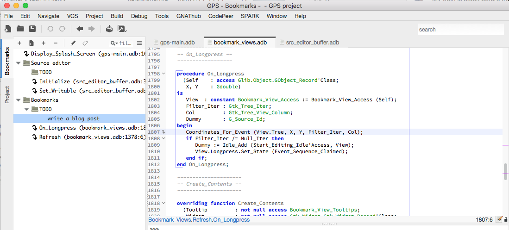{kind=link}
To create these additional groups, we will select the Source editor group, then click on the Create New Group button in the local toolbar, and type “TODO<enter>”. This will automatically add the new group beneath Source editor. Let’s do the same for the bookmarks groups. These two groups are empty for now.
Let’s add new entries to them. if we already know where code should be added to implement the new todo item, we can do as before: open the editor, select the line, then click on the [+] button. Most often, though, we don’t yet know where the implementation will go.
So we want to create an unattached bookmark. Using the name bookmark here is really an abuse of language, since these have no associated source location. But since they are visible in the Bookmarks view, it is convenient to name them bookmarks.
To create them, let’s select one of the TODO groups, then select the Create Unattached Bookmark in the local toolbar, and immediately start typing a brief description of the todo. As you can see in the screenshot, these bookmarks do not have a goto icon, since you cannot double click on them to jump to a source location.
When you delete a group, all bookmarks within are also deleted. So once you are done implementing a feature, simply delete the corresponding group to clean up the bookmarks view.
2.16.4. Adding notes¶
The short name we gave the bookmark is not enough to list all the great ideas we might have for it. Fortunately, we can now add notes to bookmarks, as a way to store more information.
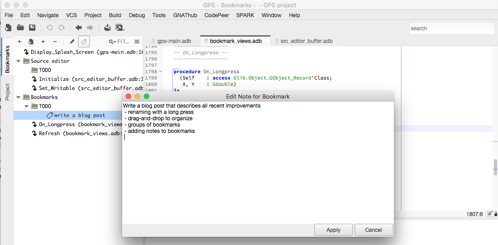{kind=link}
Let’s select the “write a blog post” item, then click on the Edit Note button in the local toolbar. This opens a small dialog with a large text area where we can type anything we want. Press Apply to save the text.
Note how a new tag icon was added next to the bookmark, to indicate it has more information. You can view this information in one of three ways:
- select the bookmark, and click again on the Edit Note button as before
- double-click on the tag icon.
- leave the mouse hover the bookmark line. This will display a tooltip with extra information on the bookmark: its name, its current location and any note it might have. This is useful if you only want to quickly glance at the notes for one or more bookmarks
2.16.5. Add note with drag and drop¶
Sometimes, though, you want to associate code with the note (i.e. the bookmark should not only point to a location, but you also want to remember the code that was in that location). The simplest to do this is to select the text in the editor, and then drag and drop the selected text directly onto the bookmark. This will create a note (if needed) or add to the existing note the full selected text.
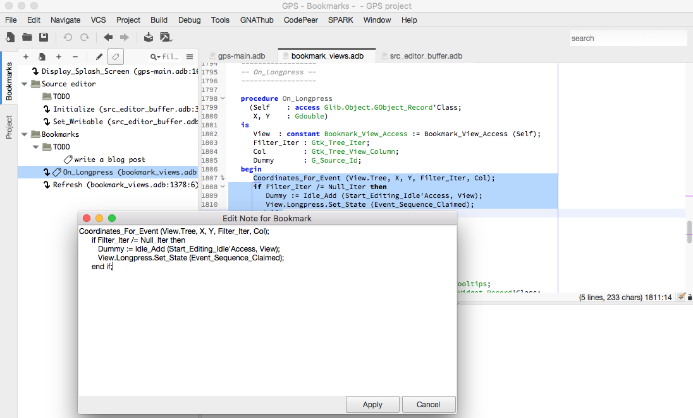{kind=link}
In the tooltips, we use a non-proportional font, so that the code is properly rendered and alignment preserved.
2.16.6. Filtering bookmarks¶
If you start creating a lot of bookmarks, and even if you have properly organized them into groups, it might become difficult to find them later on. So we added a standard filter in the local toolbar, like was done already for a lot of other views. As soon as you start typing text in that filter, only the bookmarks that match (name, location or note) are left visible, and all the others are hidden.
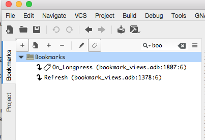{kind=link}
2.16.7. Favorite files¶
GPS provides a large number of ways to navigate your code, and in particular to open source files. The most efficient one is likely the omni-search (the search field at the top-right corner).
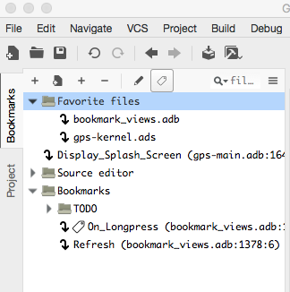{kind=link}
But some users like to have a short list of favorite files that they go to frequently. The Bookmarks view can be used to implement this.
Simply create a new group (here named Favorite files), and create one new bookmark in this group for each file you are interested in. I like to create the bookmark on line 1, but I always remove the line number indication in the name of the bookmark since the exact line is irrelevant here.
2.17. The Python Console¶
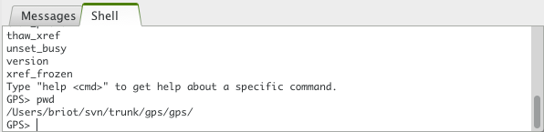 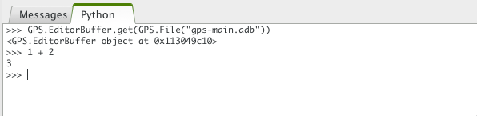These consoles provide access to the various scripting languages supported by GPS, allowing you to type interactive commands such as editing a file or compiling without using the menu items or the mouse.
The menu opens the python console. Python is the preferred language to customize GPS (many more details will be provided in later sections of this documentation). The console is mostly useful for testing interactive commands before you use them in your own scripts.
See Scripting GPS for more information on using scripting languages within GPS.
Both consoles provide a history of previously typed commands. Use the
up and down keys to navigate through the command history.
2.18. The OS Shell Console¶
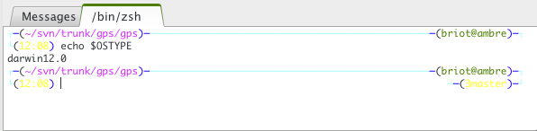GPS also provides an OS shell console, providing an access to the underlying
OS shell (as defined by the SHELL or COMSPEC
environment variables).
Open this console via the
menu, which is available only if the plugin shell.py was loaded in
GPS (the default). Check the documentation of that plugin, which lists a
few settings that might be useful.
This console behaves like the standard shell on your system, including support for ANSI sequences (and thus color output). For example, it has been used to run vi within GPS.
2.19. The Execution window¶
When a program is launched using the menu, GPS creates a new execution window allowing input and output for the program. To allow post-mortem analysis and copy/pasting, GPS does not close execution windows when the program terminates; you must close them manually. If you try to close the execution window while the program is still running, GPS displays a dialog window asking if you want to kill it.
2.20. The Tasks view¶
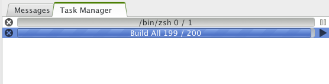The Tasks view displays all running GPS operations currently running in the background, such as builds, searches, or VCS commands.
For each task, the Tasks view displays its status and current progress. Suspend the execution of a task by clicking the small pause button next to the task. Or kill a task by clicking the interrupt button.
- Open the Tasks view by double clicking on the progress bar in
- the main toolbar or using the
menu. You can move it placed anywhere on your desktop.
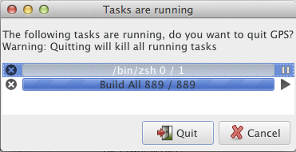If there are tasks running when exiting GPS, it displays a window showing those tasks. You can kills all remaining tasks and exit by pressing the confirmation button or continue working in GPS by pressing the Cancel button.
2.21. The Project Browser¶
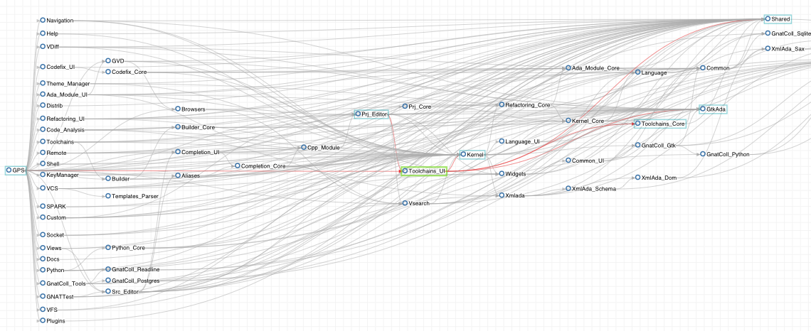The Project browser shows the dependencies between all projects in the project hierarchy. Two items in this browser are linked if one of them imports the other.
Access it through the contextual menu in the Project view by selecting the menu when right-clicking on a project node.
Click on the left arrow in the title bar of a project to display all projects that import that project. Click on the right arrow to display all projects imported by that project.
Right-clicking on a project brings up a menu containing several items. Most are added by the project editor and provide direct access to such features as editing the properties of the project, adding dependencies.
Some items in the menu are specific to the Project Browser:
Switch the focus to the Project view and highlight the first project node matching the project. This is a convenient way to get information such as the list of directories or source files for a project.
Like the right arrow in the title bar, displays all the projects in the hierarchy that are directly imported by the selected project.
Display all dependencies recursively for the project (i.e., the projects it imports directly and the projects they import).
Like the left arrow in the title bar, display all the projects that directly import the selected project.
See also Common features of browsers for more capabilities of the GPS browsers.
2.22. The Dependency Browser¶
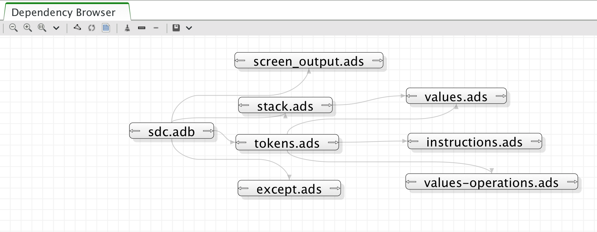The dependency browser displays dependencies between source files. Each item in the browser represents one source file. Click on the right arrow in the title bar to display the list of files the selected file depends on. A file depends on another if it explicitly imports it (with statement in Ada, or #include in C/C++). Implicit dependencies are currently not displayed in this browser since you can access that information by opening the direct dependencies. Click on the left arrow in the title bar to display the list of files that depend on the selected file.
This browser is accessible through the contextual menu in the Project view by selecting one of the following entries:
Like clicking on the right arrow for a file already in the browser, displays the direct dependencies for that file.
Like clicking on the left arrow for a file already in the browser, displays the list of files that directly depend on that file.
The background contextual menu in the browser adds a few entries to the standard menu:
Display an external dialog where you can select the name of a file to analyze.
Check that all links displays in the dependency browser are still valid. Any that not are removed. The arrows in the title bar are also reset if new dependencies were added for the files. Also recompute the layout of the graph and changes the current position of the boxes. However, the browser is not refreshed automatically, since there are many cases where the dependencies might change.
Indicates whether standard system files (runtime files for instance in the case of Ada) are displayed in the browser. By default, these files are only displayed if you explicitly select them through the menu or the contextual menu in the project view.
Indicates whether implicit dependencies should also be displayed for files. Implicit dependencies are ones required to compile the selected file but not explicitly imported through a with or #include statement. For example, the body of a generic in Ada is an implicit dependency. Whenever an implicit dependency is modified, the selected file should be recompiled as well.
The contextual menu available by right clicking on an item also contain these entries:
Open a new item in the browser, displaying the files associated with the selected one. In Ada, this is the body if you clicked on a spec file, or vice versa. In C, it depends on the naming conventions you specified in the project properties, but it generally goes from a
.hfile to a.cfile and back.These have the same function as in the project view contextual menu
See also Common features of browsers for more capabilities of GPS browsers.
2.23. The Elaboration Circularities browser¶
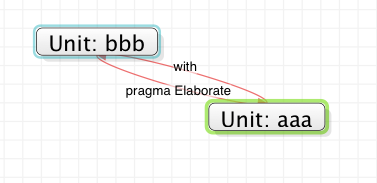GPS detects elaboration cycles reported by build processes and constructs a visual representation of elaboration dependencies in an Elaboration Cycles browser.
This visual representation depicts program units as items in the browser and direct dependencies between program units as links. All units involved in a dependency cycle caused by the presence of a pragma Elaborate_All (whether explicit or implicit) are also presented and connected by links labeled “body” and “with”.
The preference controls whether to automatically create a graph from cycles listed in build output.
See also Common features of browsers for more capabilities of GPS browsers.
2.24. The Entity browser¶
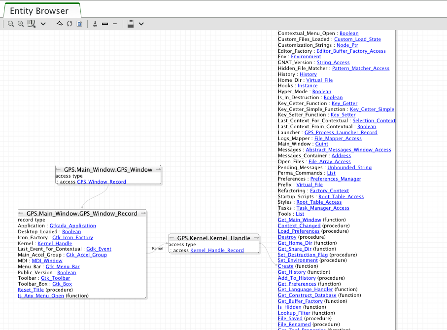The Entity browser displays static information about any source entity. What is displayed for each entity depends on the type of the entity, but are normally other entities. For example:
Ada record / C structThe list of fields is displayed.
Ada tagged type / C++ classThe list of attributes and methods is displayed.
SubprogramsThe list of parameters is displayed
PackagesThe list of all the entities declared in that package is displayed
Access this browser via the contextual menu in the project view and source editor when clicking on an entity.
Most entities displayed are clickable (by default, they appear as underlined blue text). Clicking on one opens a new item in the entity browser for the selected entity.
You can display the parent entities for an entity. For example, in a C++ class or Ada tagged type, this is the type it derives from. Display the parent by clicking on the up arrow in the title bar of the entity.
Similarly, you can display child entities (for example, types that derive from the item) by clicking on the down arrow in the title bar.
An extra button appears in the title bar for the C++ class or Ada tagged types that toggles whether the inherited methods (or primitive operations in Ada) should be displayed. By default, only new methods, or ones that override an inherited one, are displayed. The parent’s methods are not shown unless you click on this button.
See also Common features of browsers for more capabilities of GPS browsers.
2.25. The File Selector¶
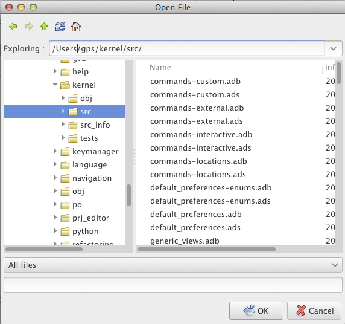The file selector is a dialog used to select a file. On Windows, the default is to use the standard file selection widget. On other platforms, the file selector provides the following contents:
- A tool bar on the top consists of five buttons:
- left arrow go back in the list of directories visited
- right arrow go forward
- up arrow go to parent directory
- refresh refresh the contents of the directory
- home go to home directory (value of the HOME environment
variable, or
/if not defined)
- A list with the current directory and the last directories explored.
Modify the current directory by modifying the text entry and pressing
Enteror by clicking on the right arrow and choosing a previous directory in the pop down list displayed. - A directory tree. Open or close directories by clicking on the
+ and - icons on the left of the directories or
navigate using the keyboard keys:
upanddownto select the previous or next directory,+and-to expand and collapse the current directory, andbackspaceto select the parent directory. - A filter area. Depending on the context, one of several filters are available to select only a subset of files to display. The filter All files is always available and displays all files in the selected directory.
- A file list. This area lists the files contained in the selected directory. If you specified a filter, only the matching files are displayed. Depending on the context, the list of files may include additional information about the files such as the type of file or its size.
- A file name area. This area displays the name of the current file, if
any. You can also type a file or directory name, with file completion
provided by the
Tabkey. - A button bar with the OK and Cancel buttons. When you have selected the desired file, click OK to confirm or click Cancel at any time to cancel the file selection.